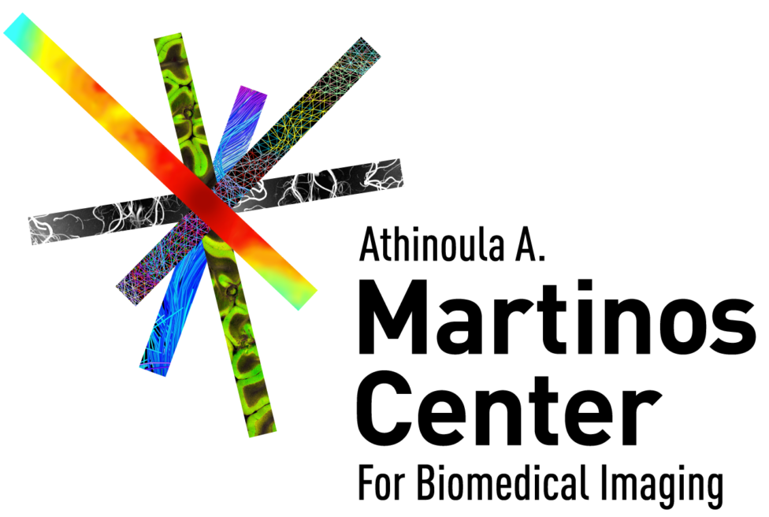
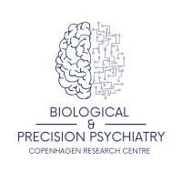
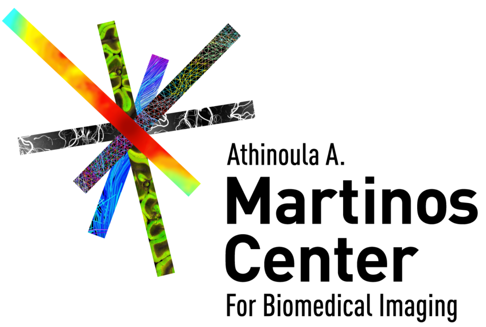
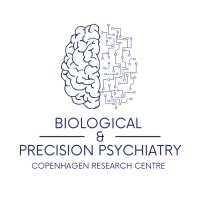

Welcome to FOMO25
The first Foundation Model Challenge for Brain MRI at MICCAI

 



Highlights
-
Access to 51,779 MRI scans for pretraining, the largest dataset ever released for brain MRI research.
-
Evaluation on three few-shot and out-of-domain tasks: infarct detection, meningioma segmentation, and brain age estimation.
-
Comprehensive code release for both pretraining and finetuning to enable reproducibility and ease of participation.
News
New Update: Registration Now Open!
March 21, 2025
We are excited to announce that registration for the FOMO Challenge is now open! Secure your spot now and be part of the innovation.
Feature Release: Enhanced MRI Preprocessing Pipeline
March 20, 2025
Explore the improvements in our MRI preprocessing pipeline for faster processing and improved accuracy.
Upcoming Webinar: Deep Dive into Foundation Models
March 19, 2025
Join our experts as they discuss the future of foundation models in brain MRI analysis. Stay tuned for more details!
Timeline
1 April
Challenge opens!
15 April
Access to sanity-check pipeline on Synapse opens (technical evaluation which confirms that Docker image is correctly configured).
15 June
Validation leaderboard opens and final submission pipeline opens.
20 August
Challenge submission deadline.
MICCAI 2025
Results will be released during MICCAI 2025 (22 September or 28 September).
Join the Challenge
Be part of the groundbreaking FOMO challenge and contribute to advancing brain MRI research. Click the button below to register and get started!
Organizing Institutions
Abstract
Evidence from general computer vision suggests that large-scale self-supervised pre-training presents vast yet underutilised possibilities in brain MRI analysis. Yet, the current method of choice for deep-learning based analysis of brain MRI is still a fully-supervised paradigm. Due to a highly effective data augmentation pipeline, the fully-supervised approach can be effective even with limited labeled data. However out-of-domain robustness remains challenging, effectively limiting the models from broad clinical deployment. The recent paradigm of training foundation models, by using self-supervised pre-training on large-scale datasets, provides an avenue to remedy this, promising models which can be few-shot adapted to novel tasks, while remaining robust to out-of-domain data.
To spearhead the development of large self-supervised foundation models in the brain MRI domain, we propose FOMO, the first challenge at MICCAI aiming to investigate foundation models for brain MRI. This challenge is designed to drastically reduce the barrier for the MICCAI community to train foundation models. Further, this challenge seeks to investigate the few-shot generalisation properties of foundation models in the context of real-world brain MRI data by evaluating models on three large clinical, multi-vendor, and multi-center datasets.
Since models are evaluated on multiple downstream tasks, this challenge seeks to investigate the effects of different pre-training paradigms and configurations on downstream performance and ultimately both identify the most promising methodologies and quantify the benefits of self-supervised pre-training. In this challenge, participants will have access to the largest brain imaging dataset ever released, assembled from public sources, comprising of 51,779 MRI scans (from 11,161 cases) of which approximately a third are of clinical quality. The pre-training dataset will not contain any segmentation maps or disease diagnosis information which can be used for supervision. Participants will first pre-train a model on this dataset, before fine-tuning models on three few-shot supervised tasks consisting of clinical MRIs spanning image-level infarct detection, meningioma segmentation and brain age estimation. Evaluation consists of large, diverse, multi-vendor, multi-center datasets consisting of 1200, 600 and 2000 MRI scans (400, 200 and 1000 subjects) respectively. 20% of the data will be made available during a pre-evaluation phase, which allows participants to gauge the performance of their models before final submission.